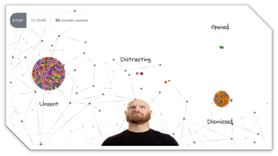

About Me
I'm Kieran, a PhD candidate at the ADAPT Centre for Digital Content Technology based in the School of Computer Science and Statistics, Trinity College Dublin. My general research theme is 'Personalising the User Experience' which I am currently exploring through the medium of push-notifications. This has lead me to learn about and take interest in the following areas:
- Mobile App Development
- Natural Langauge Processing
- Supervised & Unsupervised Machine Learning
- Generative Modeling
- Humane Technology
- Psychology of Habit and Addiction
Current Projects
Stemming from my research on push-notifications and the potential adverse effects they can have when abused, I am exploring how and if my research can be of use, from a commercial perspective, to enable those who push content to do so by empathetic means. EmPushy hopes to be an empathetic intelligence which can mediate the stream of information pushed at people while also maximising the impact it has for content creators. The idea is that the product will contain 3 commercial services offered to 3 distinct audiences.
- Websites & Apps - These are the business that are pushing information to their users. Currently, this is done in a very unintelligent or manipulative manner, whereby the information *pings* the user at the discretion of the pusher, usually resulting in instant dismissal of the information by the user. The solution EmPushy offers for this audience, is intelligent delivery, at a time that maximises Click Through Rate but at times that are empathetic to the end-user.
- Content Creators - These are the journalists and social influencers creating content that is eventually pushed via notification and consumed on various platforms. EmPushy offers this audience a real-time dashboard where they can see what stories are trending with regard push-notifications i.e. which notifications (stories) are being opened and engaged with and which are not. Through Natural Language Processing and Generative Modeling techniques, this service recommends personalised trending content to push to users.
- People who use technology! - These are everyday users of technologies such as internet browsers and smartphones. Anyone who gets pushed information through technology can benefit from EmPushy as it enables a central point of control to mediate (or stop completely) push-notifications from reaching and distracting you. Push-notifications are delivered, instead, intelligently and with empathy. It also allows people to discover content which they would like to be subscribed to. Previously unknown streams of content, available on your own terms.
Gym-Push is a custom OpenAI Gym environment that simulates real-world push-notification engagements, enabling reinforcement learning (RL) agents to learn how to effectively manage push-notifications on behalf of a user. The idea behind Gym-Push is to benchmark state-of-the-art RL algorithms on the problem of push-notification management so that standard performance metrics can be tracked in the research community. Powering Gym-Push, is a generative model which produces realistic synthetic notification-engagement data derived from a real-world data set. This data is transformed to make up the state, action and rewards of the environment to be used by agents during learning/evaluation.
Links
Academic Publications
- Generation and Evaluation of Personalised Push-Notifications, K. Fraser, B. Yousuf, O. Conlan, EvalUMAP 2019, The 25th Conference on User Modeling, Adaptation and Personalization, UMAP 2019 PDF slides
- Proposal for a Shared Challenge in the UMAP Space, O. Conlan, K. Fraser, L. Kelly, B. Yousuf, EvalUMAP 2019, The 25th Conference on User Modeling, Adaptation and Personalization, UMAP 2019 PDF
- Scrutable & Persuasive Push-Notifications, K. Fraser, B. Yousuf, O. Conlan, The 14th Internation Conference on Persuasive Technology PDF slides
- Synthesis & Evaluation of a Mobile Notification Dataset, K.Fraser, B. Yousuf, O. Conlan, EvalUMAP Workshop, 25th Conference on User Modeling, Adaptation and Personalization (UMAP '17) PDF
- An in-the-wild and synthetic mobile notification dataset evaluation, K. Fraser, B. Yousuf, O. Conlan, 2017 Intelligent Systems Conference (IntelliSys) PDF
- A Context-Aware, Info-Bead and Fuzzy Inference Approach to Notification Management, K. Fraser, B. Yousuf, O. Conlan, 2016 IEEE 7th Annual Ubiquitous Computing, Electronics & Mobile Communication Conference (UEMCON) (Best Paper Award) PDF
Other
Get In Touch
Feel free to send me an email or connect on other social/networking platforms.